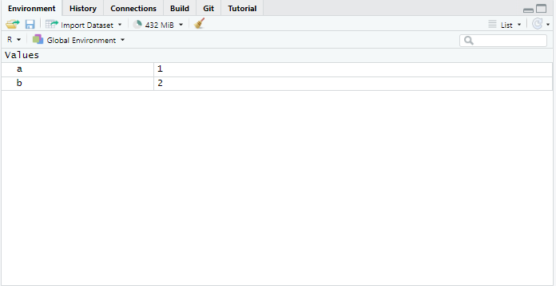

Get started
Your personal R environment
Below you can see R running in the browser. It is not as powerful as if we install R on the machine, but it spares us the hassle of setting R up on every of your Computers. You can type some simple math to try it out! You can run single lines by pressing Ctrl + Enter.
Getting help
R has a very active, diverse and inclusive community. You can find help online by simply do a quick web search. Stack Overflow is probably one of the best resources. Github - especially the issue and discussions - is a brilliant resource, but may be a little to technical for starters. You can find tutorials online, or look in the package documentation on CRAN or the package website. This all requires you to switch from R to your browser, viewer etc. Sometimes, when you just need a quick fix - the ? command is here to help. It calls the R in-built help and documentation and is a goto resource for simply looking stuff up because let’s face it: who can remember everything?
Try it out!
function help
dataset documentation
package documentation
exploring objects
You can assign values to all kind of object names. There are certain restrictions, for example an object name can not start with a number. One weird thing in R is, that is uses the arrow operator (<-) for assignments and not the equal sign (=). The = is used to set an argument value. It’s all about Environments and Workspace, but it is also a little confusing. While it does not matter out in the wild that much, it is sometimes important and keeps things clear. You may come to love it someday.
Below, we are assigning the value 1 to an object a.
Not very impressive is it? You do not see anything, and that is ok. R does not on default print anything, but we can of course explore the object.
If we assign a value to a new object, we can also print this, but what if we forgot the objects we have assigend? In an IDE we would have a viewer that shows the objects, but we do not have this in webR - a small trade-off that comes with you being able to use this in the browser. But we can use the ls() command to show all objects in the workspace (Linux users may find this familiar).

loading libraries
As most open source software, R builds upon loading libraries. Usually those are found on CRAN, but in our case they need to be provided. Let’s try loading libraries!
Here we have loaded the dplyr package, which is used for data manipulation. It is part of the much bigger tidyverse. Since the packages always have to be installed, we will not use the more extensive command library(tidyverse). This would trigger to install a lot of packages. If you want to do this on your own machine, please do so.
The Virtual File System (VFS)
webR provides you with a full VFS. We can explore the VFS a little by using the getwd() and the list.files() command. Not very impressive at first, we did not save any files in the working directory. In computing, the working directory of a process is a directory of a hierarchical file system, if any, dynamically associated with the process. It is sometimes called the current working directory (CWD) or just current directory. When a process refers to a file using a simple file name or relative path (as opposed to a file designated by a full path from a root directory), the reference is interpreted relative to the working directory of the process. So for example a process with working directory /rabbit-shoes that asks to create the file foo.txt will end up creating the file /rabbit-shoes/foo.txt1.
Below we can output the structure of the complete VFS - but watch out, it is a lengthy command. When you output the complete VFS - what do you notice?
The pipe
The pipe is a powerful operator and you will encounter it sooner or later. There are two pipe operators. The one you will find the most in documentation or on SO is the first pipe that has been introduced: %>%. It is not native to R and is provided by the package magrittr. The pipe became so popular, that it is now provided with Base R, but the characters differ: |>. In the documents you will find a happy mix of different pipes, just treat them as the same for now. The base pipe can be used with classical non-tidyverse functions, that do not take data as the first input. You do not have to care too much about that detail now, but it is good to know.
Basic piping
x |> fis equivalent tof(x)x |> f(y)is equivalent tof(x,y)x |> f |> g |> his equivalent toh(g(f(x)))
examples
Give credit where its due
If you are using R in a professional setting it is good practice to give credit where it’s due and cite the respective authors. R offers the citation() command to create bibtex entries that can be used by practical all reference management software.